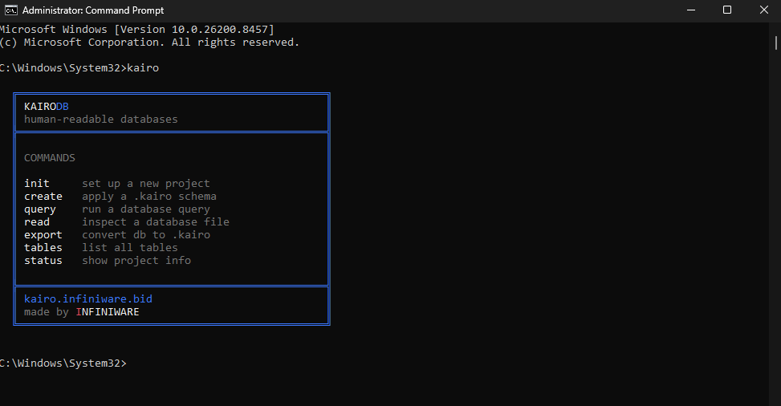
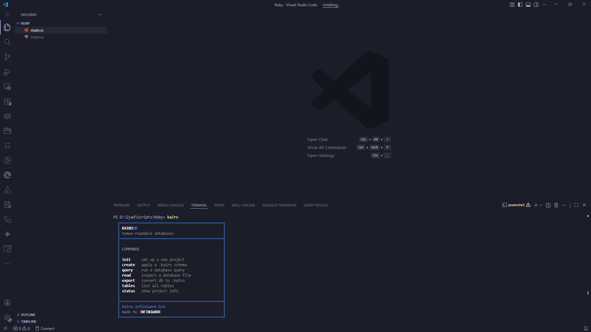

Select a topic from the sidebar.
KairoDB v0.4.0
Human-readable
databases.
A terminal-first database layer that translates human-readable schemas into real databases. Read any .db file. Write schemas in plain text. No bloat.
Read any database
Point kairo at any .db file and get a human-readable breakdown of every table, column, and row.
kairo read myapp.db
Schema in plain text
Define your tables in .kairo files. Version-control them. Apply them to SQLite or PostgreSQL.
kairo create users
Query naturally
Write queries in a simpler syntax. Or use raw SQL. Both work.
kairo query "from users"
Built for the terminal
KairoDB lives where you work. Open any terminal, type kairo, and you get a clean overview of every command available. No GUI needed. No browser. Just your keyboard and your data.
The interface is designed to be readable at a glance. Blue borders frame the output, commands are listed clearly, and everything fits in a single screen.

Works inside your editor
Run KairoDB directly from the VS Code integrated terminal. Write your .kairo schemas in one tab, apply them in another. Everything stays in one place.
No context switching. No separate database GUI. Your schema files, your code, and your database commands all live together in the same workspace.

Get started
1
Download the binary
Grab the latest release for your OS from GitHub. No Rust required.
2
Initialize a project
kairo init
3
Write a schema and apply it
kairo create users
Select a page from the sidebar.